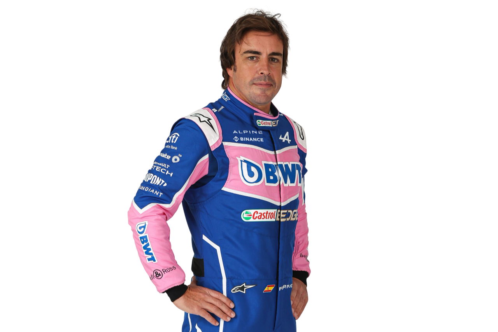
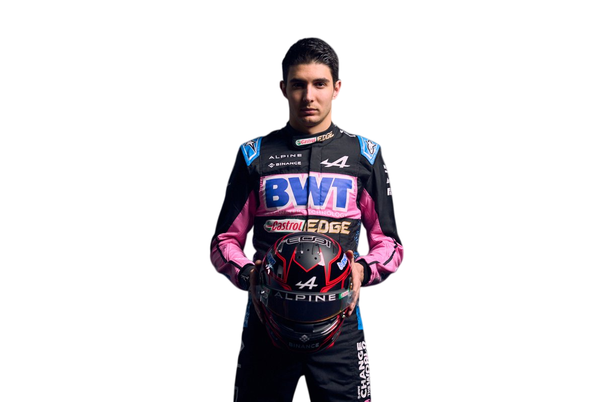

Cars

French Heritage. Formula One Ambition.
The BWT Alpine F1 Team represents the return of the iconic French manufacturer Alpine to Formula 1. Officially rebranded in 2021, Alpine traces its roots through Renault, Benetton, and Toleman — one of the most historic lineages in the sport. Backed by Renault Group, Alpine blends racing heritage with modern performance.
Renault introduces turbo engines to Formula 1.
Renault wins back-to-back World Championships with Fernando Alonso.
Alpine F1 Team debuts, winning the Hungarian Grand Prix.
Alpine fights consistently in the midfield, targeting podiums and growth.

Two-time World Champion (Renault)

Hungarian GP Winner • French Talent